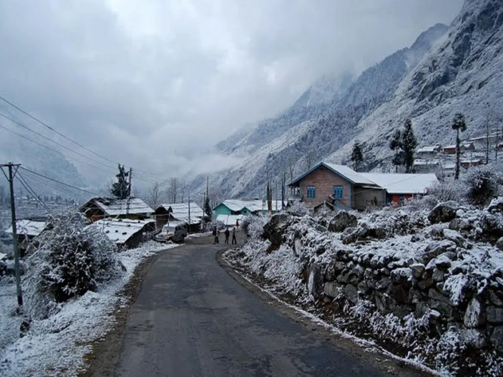
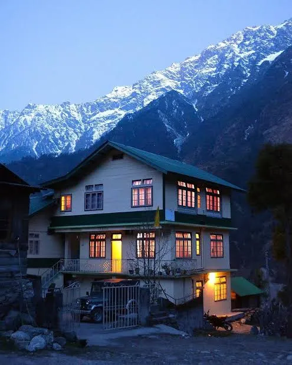
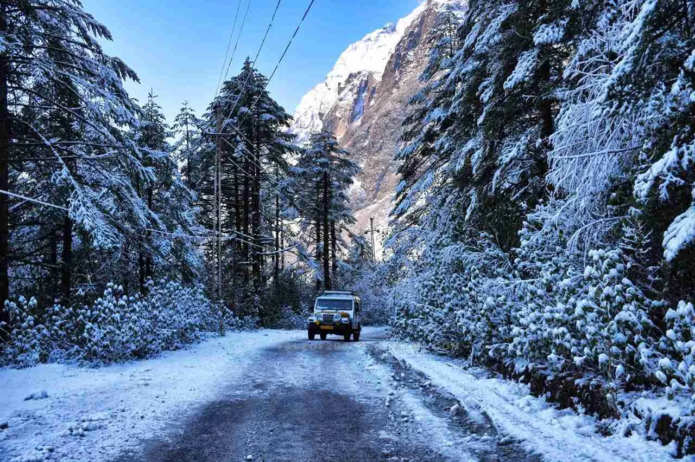

Sikkim · −10%
SIKKIM (GANGTOK-LACHUNG-PELLING) 5N-6D
Sikkim - The Himalayan Paradise
Overview
Experience the beauty of Sikkim on a memorable 5 Nights/6 Days journey covering Gangtok, Lachung and Pelling. Explore Gangtok’s charming MG Marg, monasteries and Himalayan viewpoints, then travel to the picturesque mountain village of Lachung and discover the stunning Yumthang Valley and Zero Point, subject to permits and weather conditions. Continue to Pelling to enjoy breathtaking Kanchenjunga views, visit Pemayangtse Monastery and Rabdentse Ruins, and experience the peaceful beauty of the Himalayas. This tour is perfect for travellers looking for mountains, nature, monasteries, scenic drives and unforgettable Himalayan experiences.
Journey highlights
- Sikkim 5N/6D Tour Highlights Gangtok & MG Marg Scenic Lachung Yumthang Valley Zero Point
- subject to permit & weather Beautiful waterfalls & mountain views Pemayangtse Monastery Rabdentse Ruins Pelling & Kanchenjunga views Scenic Himalayan road journeys
Day by day
The itinerary
-
Day 1
Arrival & Transfer to Gangtok
Arrive at NJP Railway Station/Bagdogra Airport and meet our representative. Proceed to Gangtok through scenic mountain roads, enjoying beautiful views of the Teesta River and surrounding Himalayan landscapes. On arrival, check in to the hotel and relax.
Meet & Greet at NJP/Bagdogra Scenic Drive to Gangtok Teesta River & Mountain Views Hotel Check-in Evening Leisure at MG Marg
-
Day 2
Excursion to Tsomgo Lake & Nathu La Pass
Enjoy a scenic excursion to Tsomgo Lake and Nathu La Pass(IF PERMITED), surrounded by spectacular Himalayan landscapes. Admire the beautiful glacial lake, snow-covered mountains and breathtaking views while experiencing the natural beauty of Sikkim. Return to Gangtok in the evening.
Tsomgo Lake Sightseeing Nathu La Pass Visit Yak Ride (optional) Snow & Himalayan Views Photography
-
Day 3
Gangtok to Lachung (North Sikkim)
After breakfast, proceed from Gangtok to Lachung, a beautiful mountain village in North Sikkim. Enjoy a scenic journey through winding Himalayan roads, lush valleys, waterfalls and breathtaking mountain landscapes. On arrival, check in to the hotel and relax amidst the peaceful surroundings of Lachung.
Scenic Himalayan Drive Mountain & Valley Views Waterfall Sightseeing Photography Stops Lachung Village Exploration Hotel Check-in
-
Day 4
Yumthang Valley & Return to Gangtok
After breakfast, proceed from Lachung to the breathtaking Yumthang Valley, popularly known as the “Valley of Flowers.” Enjoy the spectacular views of snow-capped Himalayan peaks, alpine meadows, rivers and seasonal flowers, with an optional visit to Zero Point, subject to weather and road conditions. After sightseeing, return to Lachung and begin the scenic drive back to Gangtok, enjoying the beautiful mountain landscapes and waterfalls along the way. On arrival in Gangtok, check in to the hotel and relax. Overnight stay in Gangtok.
Yumthang Valley Sightseeing Zero Point Visit (optional/subject to permits & weather) Snow-Capped Mountain Views Valley & River Photography Scenic Drive Back to Gangtok
-
Day 5
Gangtok to Pelling
After breakfast, check out from the hotel and proceed from Gangtok to Pelling, enjoying a scenic journey through the beautiful landscapes of West Sikkim. En route, visit popular attractions such as Namchi, Temi Tea Garden, Samdruptse Hill and Siddhesvara Dham (Char Dham), subject to time and route conditions. Enjoy breathtaking views of lush green valleys, tea gardens and Himalayan surroundings before continuing towards Pelling. On arrival, check in to the hotel and relax amidst the peaceful mountain atmosphere. Overnight stay in Pelling.
Scenic Drive to Pelling Temi Tea Garden Visit Namchi Sightseeing Samdruptse Hill Visit Siddhesvara Dham (Char Dham) Himalayan Valley Views & Photography
-
Day 6
Pelling Sightseeing & Departure
After breakfast, proceed for Pelling sightseeing, exploring the scenic beauty and cultural attractions of the region. Visit popular places such as Pemayangtse Monastery, Rabdentse Ruins, Khecheopalri Lake and Skywalk, subject to time and local conditions. Enjoy breathtaking views of the surrounding Himalayan mountains and capture memorable photographs. Later, return to the hotel, check out and proceed towards NJP Railway Station/Bagdogra Airport for your onward journey, carrying wonderful memories of your Sikkim holiday.
Pemayangtse Monastery Visit Rabdentse Ruins Exploration Khecheopalri Lake Visit Pelling Skywalk Himalayan Views & Photography Departure to NJP/Bagdogra
Included
- Reserved vehicle for Transfer & Sightseeing.
- All sightseeing as per the Tour Itinerary.
- Nights stay in Hotel
- Accommodation in Hotel What's Excluded
- Reserved vehicle for Transfer & Sightseeing.
- All sightseeing as per the Tour Itinerary.
- Nights stay in Hotel
- Accommodation in Hotel
Not included
- Reserved vehicle for Transfer & Sightseeing.
- All sightseeing as per the Tour Itinerary.
- Nights stay in Hotel
- Accommodation in Hotel
Gallery
Scenes from the route





Reserve this journey